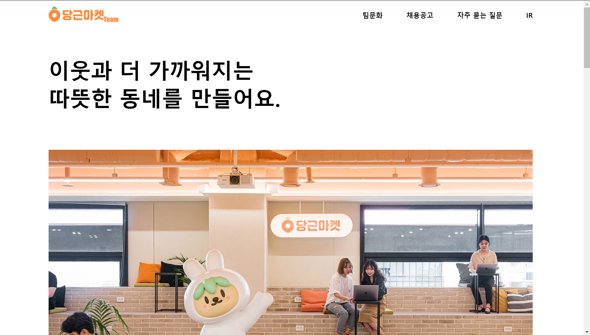

목표
더 나은 세상을 위한 더 나아가는 개발자가 되고자 합니다.
일상 속의 의문에 대해 궁금증을 갖고,
공학적인 지식을 이용하여 지속적으로 해결하려고 노력하며,
내놓은 해결책에 안주하는게 아닌,
더 나은 결과물을 산출하기 위해 꾸준한 변화를 추구하는 개발자
공학적인 지식을 이용하여 지속적으로 해결하려고 노력하며,
내놓은 해결책에 안주하는게 아닌,
더 나은 결과물을 산출하기 위해 꾸준한 변화를 추구하는 개발자
본인 역량
-
2022년도
- 22. 03 공주대학교 소프트웨어학과 입학
- 22. 09 2022 KNU 2차 창업동아리 팀장
-
2023년도
- 23. 02 백준 100문제 solve 달성
- 23. 02 공주대학교 프로그래밍 동아리 Primitive PC관리부서장
- 23. 06 KT창의혁신리더 2기 장학생 선발
-
2024년도
- 24. 01 공주대학교 프로그래밍 동아리 Primitive 22대 회장
- 24. 01 나도코딩 스프링부트 코딩자율학습단 6기 완료
- 24. 03 2024 KNU 창업동아리 팀장
- 24. 05 공주대학교 소프트웨어학과 C 멘토링 멘토
-
개인 프로젝트 (Individual Projects)
2022.7 당근마켓팀 클론코딩
github: 당근마켓팀 클론코딩 깃허브 바로가기
2022.11 Todolist
github: Todolist 깃허브 바로가기
-
팀 프로젝트 (Team Projects)
프로젝트/과제 중 어려웠던 점
웹 크롤링과 비밀번호 암호화, 안드로이드 스튜디오 도전
2023년도에 진행한 자바 프로젝트에서 학교 학생소식을 웹 크롤링하는 역할과 비밀번호 암호화, 앱의 대체적인 프론트엔드 역할을 맡았었습니다. 우선, 프로젝트의 룰이 모든 탭들을 액티비티가 아닌 프래그먼트로 만드는 것이 어려웠습니다. 액티비티로 한다면 인텐트 방식으로 탭을 옮기면 되지만, 프래그먼트로 한다면 다른 프래그먼트로 옮길 때 현재 프래그먼트를 다른 프래그먼트로 replace를 하거나, 현재 프래그먼트를 지우고 다른 프래그먼트를 올리는 등의 방식이 있습니다. 이전에 선배와 앱 프로젝트를 했던 경험이 있어서, 프로젝트를 하면서 이전 프로젝트의 코드를 다시 보며 한 번 더 배웠던 것 같습니다. 그래서 같은 팀원이 프래그먼트 관련해서 모르는게 있다면 알려주고 또 배울 수 있는 선순환이 될 수 있었습니다. 크롤링을 할 때, 처음 해보는 작업이라 이것 저것 찾아보고 적용해보면서 하루를 크롤링 하는 데에 썼던 기억이 있습니다. 크롤링은 학교 학생소식에 있는 내용들을 html 요소들을 jsoup을 이용하여 가져와 앱의 공지사항 탭에 띄우는 것이었습니다. 웹에서 개발자모드를 통해 html 요소를 알아내며 앱에서 잘 되는지 실행해보는 작업을 하며 웹과 앱이 조화를 이루는 것 같아 힘들기도 했지만 재미있게 코딩을 했습니다. 특히 thread를 이용해서 크롤링 화면을 띄우는 것이 이해하는 게 어려웠지만 당시 운영체제 시간에 thread에 대해 배웠던 내용과 일맥상통하는 개념이어서 그런 과정도 즐겁게 느껴졌습니다. 가장 어려웠던 것은 요소를 모두 가져와서 href 문자열에 넣고 리사이클러뷰에 옮기는 작업이었습니다. 분명 요소를 넣었는데 리사이클러뷰에 아무것도 뜨지 않아 오랜 시간 애를 먹었습니다. 구글링해서 많이 찾아봤는데도 해결방안이라는 것을 찾지 못했습니다. 그러다가 학생소식에 개발자 모드로 들어가서 게시글마다 있는 href를 통해 들어갔더니 게시물만 덩그러니 있는 것을 발견했습니다. 게시물만 있는 페이지 상단에 단축 url을 눌러서 확인했더니 모든 게시물에 “?layout=unknown” 이 있는 것을 발견하고 시험삼아 원래 작성한 코드의 href 문자열에 “?layout=unknown”를 추가했더니 동작이 잘 되는 것을 확인할 수 있었습니다. 잔머리로 해결이 되었지만 이건 어떨까 저건 어떨까 하면서 직접 실행에 옮기는 해결 과정이 너무 재미있었습니다.
파이토치와 다중 선형 회귀를 활용한 머신러닝 모델 최적화 도전
가장 최근에 선배와 연구를 진행하면서 다중 선형 회귀 방식을 이용해서 pytorch로 머신러닝 모델을 만드는(정확히는 최적화) 작업을 하고 있습니다. pytorch도 머신러닝도 처음이라 pytorch를 배우면서 선형 회귀 모델을 만드는 스터디를 진행했는데, 아예 몰랐던 분야라 저에 대한 확신이 부족했다는 점이 가장 어려웠던 것 같습니다. 유튜브 강의를 통해 pytorch를 배우면서 colab에 데이터를 넣는 것 부터가 어려웠습니다. stack overflow에서 그 답을 찾게 되었고, 코랩에서 구글 드라이브 마운트를 하여 드라이브에 있는 데이터를 읽어올 수 있었습니다. pytorch를 시작하고 첫 난관이었기에 기념하면서 영어로 되어있을 자료들에 힘들어 할 사람들을 위해 블로그 정리 글( https://cuckoobird.tistory.com/181 )도 올렸습니다. 그 다음으로는 학습 데이터를 numpy로 만드는 과정이 힘들었습니다. dataset에는 결측값이 문자열로 들어가 있는 경우가 있어서 행을 제거하는 mask를 적용한 dataframe을 만들어 학습 dataframe을 numpy로 변환, numpy를 tesor로 변환하며 해결했습니다. 모델을 평가하는 과정에서도 왜 훈련을 하면서 모델을 평가하는 건지 몰랐는데, gpt를 통해 모델이 학습되는 동안 과적합 여부를 모니터링하고, 모델의 성능을 주기적으로 평가하기 위함이라는 것을 알게 되었습니다. 그 다음으로는 예측값과 테스트값이 많이 달랐던 것에서 어떻게 해야하나에 대한 고민이었습니다. learning rate와 epoch를 다르게 줘가면서 어떻게 해야 가장 비슷하게 나오는지 계속해서 실행해보며 해결을 했습니다. 2학년 2학기에 배웠던 알고리즘 내용들이 많이 나와서 직접 사용한다는 점이 재미있었고, 3학년 1학기(현재)에 듣고 있는 빅데이터에서 본 내용이 나와서 빅데이터 수업을 더 재미있게 듣게 되는 계기가 되었습니다. 해결해나가는 과정에서 자신에 대한 확신도 생길 수 있었습니다. 마지막으로는 깃허브에 colab 노트북을 올리는 과정이었는데, 처음에는 코드를 복사해서 올리니 깃허브 Preview에서 아무것도 보이지 않고 에러가 뜨는 것을 발견했습니다. 깃허브 organization의 레포지토리를 사용하던 터라, colab의 노트북을 깃허브 organization으로 올리는 방법을 찾아보았습니다. 구글링 하면서 찾은 내용을 먼저 내 repository에 적용해보고, 그 다음에 선배한테 organization에 온 colab 연동 request를 보내서 연동과 업로드를 할 수 있었습니다. 구글링해서 찾아본 결과가 확실하지 않아서 개인 프로젝트였다면 일단 해봤겠지만 팀 프로젝트라서 많이 주저하면서 여쭤봤는데, 선배가 흔쾌히 해주셔서 감사했습니다. 그래서 모르는 것이나 해보고 싶은 것에 대한 말은 아끼면 안 된다는 것을 알게되었습니다.
해결하는 모든 과정의 끝에서는 항상 내가 왜 코딩을 하고 있는지를 깨달았습니다. 어려운 점이 있다면 그 뒤에는 해결방안이 있으니깐요. 해결방안은 존재하지 않는 것이 아니라 아직 해결하기 까지의 시간에 도달하지 못 한 거라고 생각합니다. 모든 일이든 엄청난 열정이 아니더라도 그 일을 해결하기 위해 시간을 들이는 것이 중요하다고 느낍니다.
Keyword로 보는 성장 과정
저는 가장 큰 영향을 받은 사건이 없습니다.
어떤 사건이던 매 순간 작은 영향을 받고 있다고 생각이 듭니다.
사소하지만 결코 무시할 수 없었던 사건들을 반성하고 회고하며 성장할 수 있었다고 생각합니다.
그래서 이러한 사건들에서 깨달은 키워드들 중 제가 가장 좋아하는 키워드들과 계기가 되었던 사건 몇 개를 나열하겠습니다.
- 완성
- 재미
- 침착
- 배움
최근 관심 사회 이슈
보이스피싱은 1997년 대만에서 시작되어 전 세계적으로 확산된 심각한 범죄입니다. 국내에서는 2006년 5월 '국세청 직원 사칭 환급금 사기 사건'을 통해 처음 발생했으며, 이제는 남의 이야기가 아닌 우리 곁에 가까이 다가와 있는 현실입니다. 실제로 작년에 어머니의 지인께서 피해를 입으셨고, 올해에는 저의 부모님까지도 피해를 당할 뻔 했습니다. 이를 통해 보이스피싱의 심각성과 위험성을 절실히 깨닫게 되었습니다. 보이스피싱은 피싱의 한 종류로, 피싱이란 가짜 금융기관 웹사이트나 위장 이메일을 통해 개인 인증번호, 신용카드 정보, 계좌 정보 등을 불법적으로 알아내는 사이버 범죄를 의미합니다. 피싱의 종류로는 특정 개인이나 회사를 대상으로 하는 스피어 피싱(spear phishing), 링크나 첨부 파일이 포함된 이메일을 통한 클론 피싱(clone phishing), 고위 경영 간부를 대상으로 한 웨일링(whaling), 그리고 문자 메시지(SMS)와 피싱(phishing)의 합성어인 스미싱(smishing)이 있습니다. 이와 같이 다양한 형태의 피싱 중, 전화를 이용한 범죄 행위를 보이스피싱(voice phishing)이라고 합니다.

2020년부터 2023년까지의 보이스피싱 피해 현황을 살펴보면, 총 피해금액은 2020년 2353억 원에서 2022년 1451억 원으로 감소하다가 2023년 1965억 원으로 다시 증가했습니다. 특히, 1인당 피해금액은 2022년 132만 원에서 2023년 708만 원으로 급격히 증가하여 피해 사건이 소수의 큰 피해 사건으로 집중되었음을 알 수 있습니다. 이는 보이스피싱의 위험성이 여전히 높다는 것을 보여줍니다. 2023년 유형별 보이스피싱 피해 현황을 보면, 대출을 빙자한 보이스피싱이 전체 피해의 35.2%를 차지하며 가장 큰 비중을 차지하고 있습니다. 그 뒤를 이어 가족·지인을 사칭한 메시지 피싱이 33.7%, 기관을 사칭한 보이스피싱이 31.1%를 차지하고 있습니다. 이는 대출을 빙자한 사기와 가족·지인을 사칭한 사기가 주요 문제로 떠오르고 있음을 보여줍니다.
보이스피싱 범죄는 점점 더 정교해지고 있습니다. 유지훈 경찰청 금융범죄수사계장은 이러한 조직이 통신, 금융, 수사 등 각 분야의 전문가들로 구성되어 있으며, 공문서 조작, 악성 앱 강제 설치, 가상자산 활용 등 전문적인 수법을 사용하고 있다고 말합니다. 이들은 미리 확보한 개인 정보를 바탕으로 피해자의 심리적 허점을 노리는 맞춤형 시나리오를 제작하여, 경제적 어려움을 겪는 이들에게 정부 지원금이나 저금리 대환 대출을 미끼로 접근합니다.
따라서, 저는 백엔드 개발자로서 어려운 사람들을 도울 수 있는 사회적 공헌 프로젝트에 참여하고자 합니다. 기술을 활용하여 보이스피싱과 같은 범죄를 예방하고, 피해자들을 보호할 수 있는 시스템을 개발하고 싶습니다. 이는 단순히 기술적 성취를 넘어, 사회적으로 의미 있는 기여를 하는 일이 될 것이라고 생각합니다. 저는 이러한 목표를 가지고 지속적으로 노력하고 성장하며, 사람들의 신뢰에는 신뢰로 보답할 수 있는 안전한 사회를 만드는데 일조하고자 합니다.